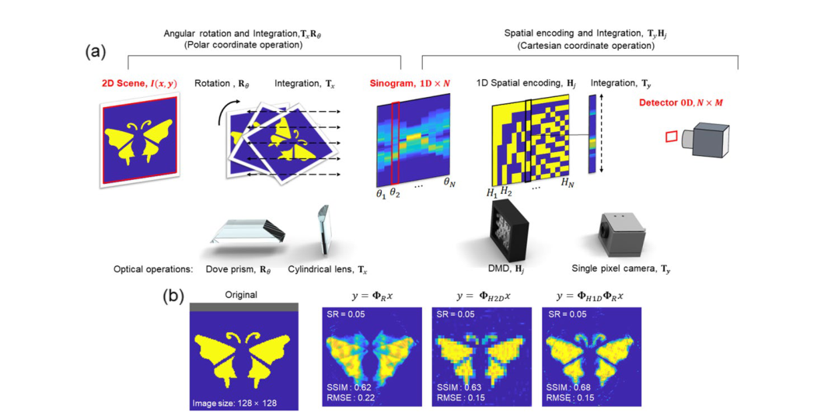

级联压缩怎样让单像素相机读取高维光场？
光学变换先把光场压到较低维的中间表示，再引入光谱、时间或角度编码。各级测量承担不同维度的信息压缩。
Cascaded compressed-sensing single-pixel camera for high-dimensional optical imaging
方法
二维示例由两个阶段组成：
- Dove 棱镜旋转图像，柱面镜沿一个方向积分，得到不同角度的 Radon 投影并组成 sinogram。
- DMD 用一维 Hadamard 图案编码 sinogram，再由单像素探测器积分。
级联结构的意义在于，中间的一维表示释放出一条空间轴，可以把光谱等额外维度映射到该轴上。这样，高维数据不再完全受单块二维 SLM 像素数限制，同时保留单像素探测器的时间带宽。
研究问题拆解
传统单像素相机通常把二维图像直接编码为一串强度测量。扩展到高维时会遇到两个问题：
- 二维 SLM 像素数不够。 如果把空间、光谱、时间、角度都映射到同一 DMD 平面，很快会出现维度互相挤压，某一维分辨率必须牺牲。
- 时间复用会消耗单像素探测器的带宽优势。 若逐波长、逐角度、逐深度扫描，虽然仍是单像素探测，但高维数据采集时间会过长，无法测动态信息。
作者的解决思路是“级联”：每一级都由一个低维折叠步骤和一个高维展开步骤组成。低维折叠把当前数据压到更低维中间平面，高维展开则把新的物理维度映射到释放出来的空间轴上。这样，高维信息不是一次性塞进 DMD，而是沿光路逐级重排。
级联压缩机制细读
以二维图像为例：
- Stage I：图像经过 Dove 棱镜旋转，再经柱面镜沿水平方向积分，得到某一角度的投影。多个角度投影组成 sinogram，这类似 CT 中的 Radon transform。
- Stage II：DMD 对 sinogram 做一维 Hadamard 编码，再由单像素探测器积分。
- 重建：作者用 basis-pursuit L1 最小化恢复图像。
为什么这比直接二维 Hadamard 欠采样更好？作者的解释是，Radon 投影和后续一维编码重新混合了图像结构，使高压缩率下的采样更适合自然场景的稀疏性。直接抽取二维 Hadamard 子集时，子集选择容易依赖具体场景，高频信息丢失会出现像素化伪影。
核心结果
- 128×128 phantom 仿真中，在采样率
SR ≤ 0.05时，级联压缩的 RMSE 和 SSIM 优于稀疏角 Radon 与二维 Hadamard 压缩。 - 二维实验约 116,000 个有效像素，仅采集 1,530 个样本，
SR = 0.013，仍能辨认目标。 - 高光谱实验重建
384 × 384 × 20数据立方体，使用 45 个旋转角和 192 个 Hadamard 图案，SR = 0.075。 - DMD 为 8 kHz，总采集时间约 22 s，约 130,000 voxels/s；光谱范围 500-650 nm，系统光谱分辨率约 6.2 nm。
- 高光谱测量的归一化光谱差 RMSE 为 0.092。
- 全波形光谱 LiDAR 重建
384 × 384 × 10 × 15数据，APD 带宽 1.6 GHz、数字化 2.5 GHz，轴向采样约 6 cm。 - 无机械扫描的光场原型使用 12 个不同角度的 Dove 棱镜和 4 个柱面镜，在
SR = 0.06下实现三维光场重聚焦。
三个实验模块
1. 二维级联压缩成像
目标是证明级联压缩在高欠采样下不是概念游戏。作者先用 Shepp-Logan phantom 比较三类测量：稀疏角投影、二维 Hadamard 欠采样和级联压缩。结果显示在 SR ≤ 0.05 时级联压缩的 RMSE 更低、SSIM 更高。实验中约 116,000 个有效像素只用 1,530 个样本，图像质量退化但仍可辨认。
2. 单像素高光谱成像 (x, y, lambda)
Stage I 后得到一维投影线，作者用光栅把 500-650 nm 光谱展开到 DMD 的横向轴上，再用 DMD 同时选择空间投影和光谱位置。这样，中间平面的一条轴被光谱“填充”，最终可重建 384 × 384 × 20 数据立方体。
这个实验的关键不是速度，而是维度重排：用 45 个旋转角和 192 个 Hadamard 图案获得 SR = 0.075 的压缩测量。总采集约 22 s，说明它是高维概念验证，不是视频高光谱。
3. 全波形光谱 ToF 和光场成像
光谱 ToF 实验把时间维也保留下来。系统用 APD 记录完整时间波形，2.5 GHz 数字化带来约 6 cm 轴向采样。重建数据维度为 384 × 384 × 10 × 15，其中 10 是光谱维，15 是时间/深度采样。
光场实验用 12 个 Dove 棱镜并行获得不同视角投影，避免机械旋转。这说明级联思想可以扩展到 (x, y, u, v)，但并行模块的装调和角度数会变成新限制。
原文图表索引

- Figure 1：级联压缩的核心概念。先做 Radon 投影，再做一维 Hadamard 编码。
- Figure 2：与二维 Hadamard和稀疏角投影比较，显示高压缩率下级联方法的优势。
- Figure 3：高光谱成像，展示空间-光谱数据和基准光谱仪比较。
- Figure 4：全波形光谱飞行时间成像，同时保留
(x, y, λ, t)。 - Figure 5：用 Dove 棱镜阵列并行获取多角度投影，绕开机械旋转，扩展到
(x, y, u, v)光场。 - Figure 6：一般化的多级“低维折叠-高维展开”框架。
图表细读
- Figure 1：上半部分是物理流程，下半部分是矩阵流程。重点看 sinogram：它是 Stage I 的中间表示，也是后续维度展开的“空位”。
- Figure 2：不要只看图像是否好看，要看同一采样率下三种方法的 RMSE/SSIM。级联方法在高欠采样时优势最大，说明其价值主要出现在测量数非常紧张时。
- Figure 3：高光谱实验。a 是系统设置，b-d 是光谱标定，e-i 是目标和重建。图中 500-650 nm 的范围、约 6.2 nm 光谱分辨率、
384 × 384 × 20体素大小是引用重点。 - Figure 4：全波形光谱 LiDAR。它展示的不只是深度图，而是每个深度位置仍有光谱信息。读图时要把
lambda和t两维同时看作数据立方体的一部分。 - Figure 5：并行光场模块是对机械扫描限制的回应。12 个 Dove 棱镜给出 12 个视角，4 个柱面镜做投影；它验证“无旋转”可行，但不是无限角度采样。
- Figure 6：概念总结。低维折叠和高维展开交替出现，是这篇文章最适合引用到 proposal 或综述里的框架图。
机制链条
高维光场难以直接由 0D 探测器采集 -> 用光学变换把一部分维度折叠成低维中间表示 -> 在释放出的空间轴上映射光谱、时间或角度等新维度 -> 用 DMD 对中间表示做压缩编码 -> 单像素探测器记录强度 -> 稀疏重建恢复高维数据。
这条链条的核心条件是：每一级光学变换必须保留足够信息，同时让下一阶段的信号更容易被压缩。如果某一级变换导致不可逆混叠，后续再强的重建也救不回来。
局限
- 主高光谱系统仍使用机械旋转 Dove 棱镜，22 s 采集时间不适合快速动态场景。
- DMD 刷新率和机械惯量共同限制速度；并行棱镜阵列虽去掉旋转，但角度数固定且光学装调复杂。
- 每一级采样率如何分配依赖场景在不同维度的稀疏性，没有通用最优方案。
- 高压缩率下图像可辨认，但质量明显下降；“能重建”不等于保留定量光谱或细小结构。
- LiDAR 轴向采样约 6 cm，属于概念验证，离高精度三维测量仍有距离。